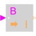

BooleanToIntegerConvert Boolean to Integer signal |

|
Information
This information is part of the Modelica Standard Library maintained by the Modelica Association.
This block computes the output y as Integer equivalent of the Boolean input u:
y = if u then integerTrue else integerFalse;
where u is of Boolean and y of Integer type, and integerTrue and integerFalse are parameters.
Parameters (2)
| integerTrue |
Value: 1 Type: Integer Description: Output signal for true Boolean input |
|---|---|
| integerFalse |
Value: 0 Type: Integer Description: Output signal for false Boolean input |
Connectors (2)
| u |
Type: BooleanInput Description: Connector of Boolean input signal |
|
|---|---|---|
| y |
Type: IntegerOutput Description: Connector of Integer output signal |